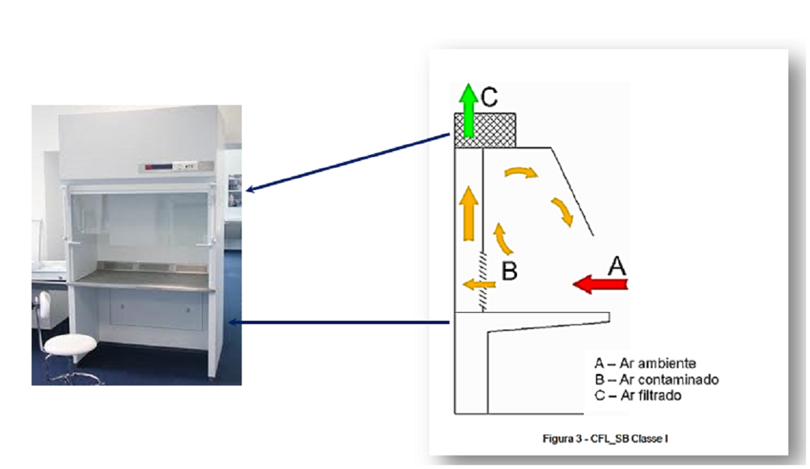
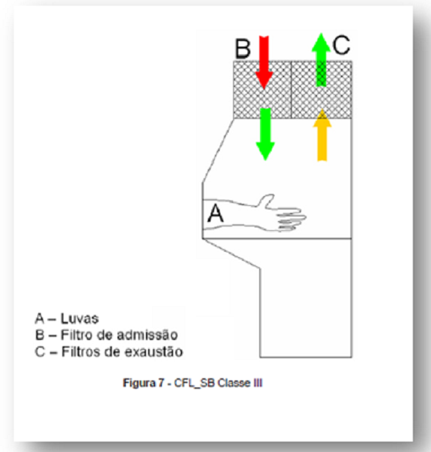
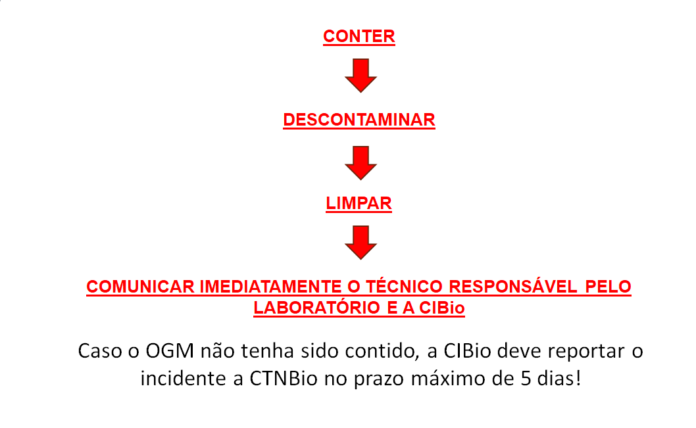
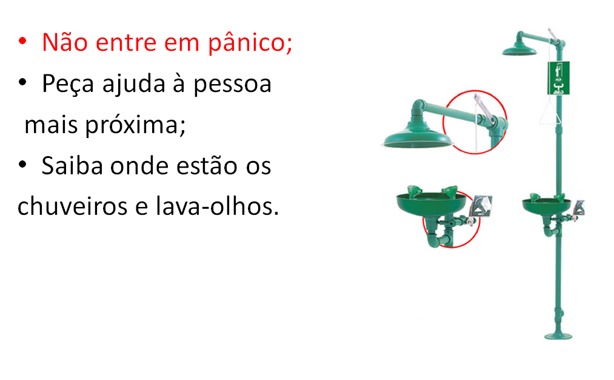
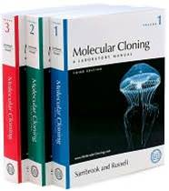
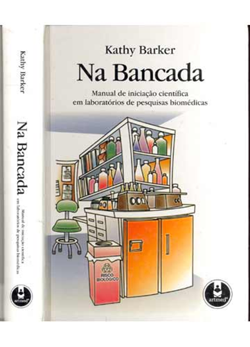
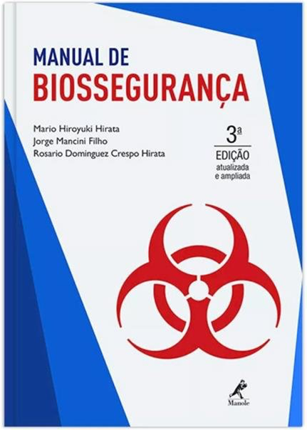

Nível de Biossegurança 2
- Manter registro da utilização do sistema de luz ultravioleta das Cabines de Segurança Biológica (CSBs) com contagem do tempo de uso (vida útil de 7.500 horas);
- Manter um sistema de manutenção, calibração e de certificação dos equipamentos de contenção. A cada seis meses as CSBs e demais equipamentos essenciais de segurança devem ser testados, calibrados e certificados;
- O equipamento contaminado deverá ser descontaminado de acordo com as normas locais, estaduais ou federais, antes de ser enviado para conserto, manutenção ou acondicionamento para transporte, de acordo com as normas locais, estaduais ou federais aplicáveis, antes de ser removido do local;
- Acidentes ou incidentes que resultem em exposição a materiais biológicos potencialmente patogênicos devem ser imediatamente notificados ao Profissional Responsável, sendo mantido registro por escrito dos acidentes e das providências adotadas;
- Caso envolva OGM, o acidente deve seguir procedimento emergencial a ser explicado nos próximos slides.
- Todos os materiais e resíduos potencialmente infecciosos devem ser colocados em um recipiente com uma tampa que evite o vazamento durante a coleta, o manuseio, o processamento, o armazenamento, o transporte ou o embarque. Devem ser descontaminados, preferencialmente esterilizados, antes de serem reutilizados ou descartados;
- O laboratório deve ser projetado de modo a permitir fácil limpeza e descontaminação. Carpetes e tapetes não são apropriados para laboratório.
- Devem ser usadas luvas, quando houver um contato direto com materiais e superfícies potencialmente infecciosas ou equipamentos contaminados. O mais adequado é usar dois pares de luvas. Essas luvas devem ser desprezadas quando estiverem contaminadas, o trabalho com materiais infecciosos for concluído ou quando a integridade da luva estiver comprometida. Luvas descartáveis não podem ser lavadas, reutilizadas ou usadas para tocar superfícies "limpas" (teclado, telefones, etc.), e não devem ser usadas fora do laboratório. As mãos deverão ser lavadas após a remoção das luvas. Luvas descartáveis não devem ser reutilizadas.
- Todas as culturas, colônias e outros resíduos devem ser descontaminados antes de serem descartados através de um método de descontaminação aprovado como, por exemplo, esterilização por calor úmido (autoclave). Os materiais que forem ser descontaminados fora do próprio laboratório devem ser colocados em recipientes inquebráveis, à prova de vazamentos e hermeticamente fechados para serem transportados ao local desejado!
Nível de Biossegurança 2
- Devem ser utilizadas CSBs, classe I ou II, sempre que sejam realizadas culturas de tecidos infectados, bem como procedimentos com elevado potencial de criação de aerossóis, como trituração, homogeneização, agitação vigorosa, ruptura por sonicação, abertura de recipientes contendo material onde a pressão interna possa ser maior que a pressão ambiental e cultivo de tecidos ou fluidos infectados;
- Sempre que o procedimento for potencialmente gerador de aerossóis e gotículas, provenientes de materiais biológicos, deverá ser utilizada a proteção para o rosto (máscaras, protetor facial, óculos de proteção, CSB, entre outras);
- A centrifugação, fora da CSB, só poderá ser efetuada se utilizada centrífuga de segurança e frascos lacrados. Esses só deverão ser abertos no interior da cabine.
- Uma autoclave deve estar disponível, no interior ou próximo ao laboratório, dentro da edificação, de modo a permitir a descontaminação de todos os materiais utilizados e resíduos gerados, previamente a sua reutilização ou descarte;
- Nos insetários, não existirão janelas ou as janelas serão seladas para não serem abertas e teladas com dupla tela;
- Nos insetários, não é permitido o descarte de material contaminado pelo nas pias, sem antes este ser descontaminado por meio químico ou físico;
- Os jalecos devem ser descontaminados semanalmente. Jalecos descartáveis serão colocados na lixeira, descontaminados e descartados com os demais materiais contaminados para descarte. Os jalecos não descartáveis, para serem retirados dos laboratórios, devem ser previamente descontaminados por congelamento e/ou autoclavagem. A equipe do laboratório nunca deve levar os jalecos dos laboratórios NB2 para a casa.
Cabines de Segurança Biológica
- Cabines de Segurança Biológica Classe I
- “É uma cabine ventilada com fluxo de ar do ambiente, podendo ter a frente totalmente aberta ou com painel frontal ou painel frontal fechado com luvas de borracha. Possui duto de exaustão com filtro HEPA. Não há proteção para o experimento somente para o operador e o ambiente.”
- Cabines de fluxo laminar.

- Cabines de Segurança Biológica Classe II
- “A cabine classe II é conhecida com o nome de Cabine de Segurança Biológica de Fluxo Laminar de Ar. O princípio fundamental é a proteção do operador, do meio ambiente e do experimento ou produto. (...) Possui filtro HEPA.”
- São divididas em subgrupos:
- O ar contaminado após filtragem passa pelo filtro HEPA do exaustor, passa ao ambiente onde a cabine está instalada;
- Recircula 70% do ar, o resto sai pela parte superior.
- B1: Muito parecida com a de classe II A, mas recircula 30% do ar, podendo ser usada com algumas substâncias tóxicas;
- B2: não recircula o ar, todo o ar sai pelo sistema de exaustão.
- É uma cabine de contenção máxima. É totalmente fechada com ventilação própria, construída em aço inox à prova de escape de ar e opera com pressão negativa. O trabalho se efetua com luvas de borracha presas à cabine;
- Para organismos de alto risco;
- A UnB não tem permissão para trabalhar com esses organismos!
CSB Classe II A (A1)

CSB Classe II B

Cabines de Segurança Biológica Classe III

Procedimentos emergenciais

Em caso de acidentes

Procedimentos emergenciais
Em caso de acidente, incidente ou potencial acidente, informar de imediato o Pesquisador Responsável, e se possível e seguro devem ser seguidos os seguintes procedimentos mitigatórios:
- Em caso de derramamento de material biológico, este deve ser contido com a utilização de material absorvente (use luvas!). Todo o material absorvente deve ser descontaminado antes de ser descartado (ex. autoclave). A área do derramamento deve ser descontaminada (ex. hipoclorito ou lisofórmio). Após a limpeza dos resíduos, outra atividade poderá ser executada.
- Em caso de punção, ferimento, inalação ou ingestão de material biológico patogênico, informar de imediato o Pesquisador Responsável. Se necessário exame médico e tratamento, a pessoa será encaminhada para o Hospital (HUB) e deve informar o microrganismo manipulado.
Literatura útil

Na Bancada – Manual de iniciação científica para laboratórios de pesquisa biomédicas (Kathy Barker)

Manual de Biossegurança (Mário Hiroyuki Hirata)
